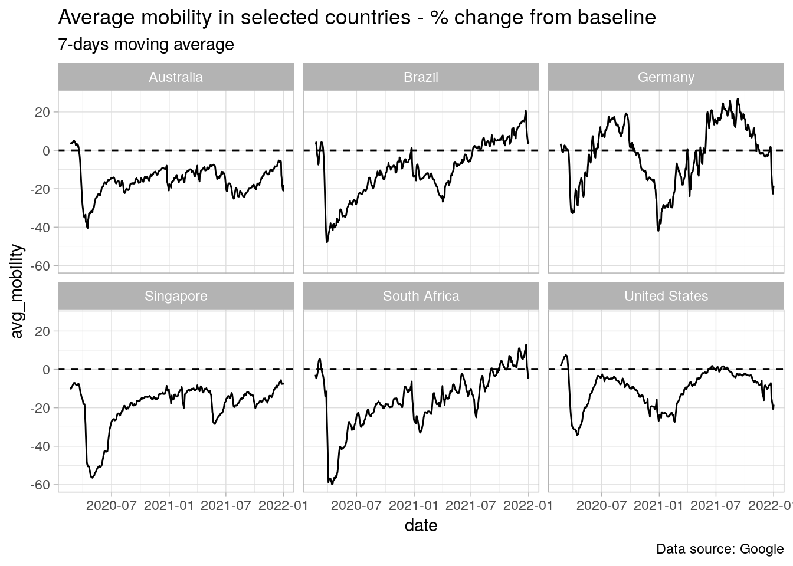
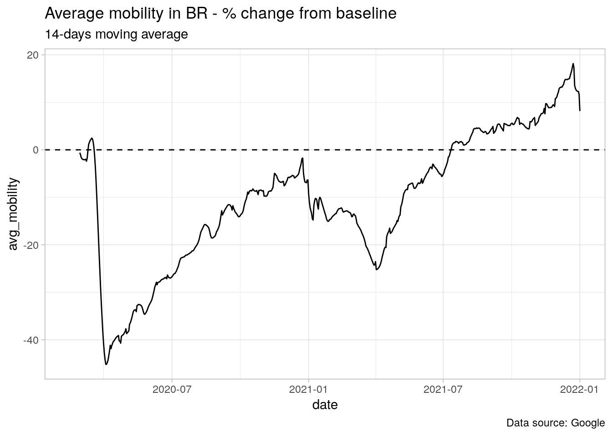
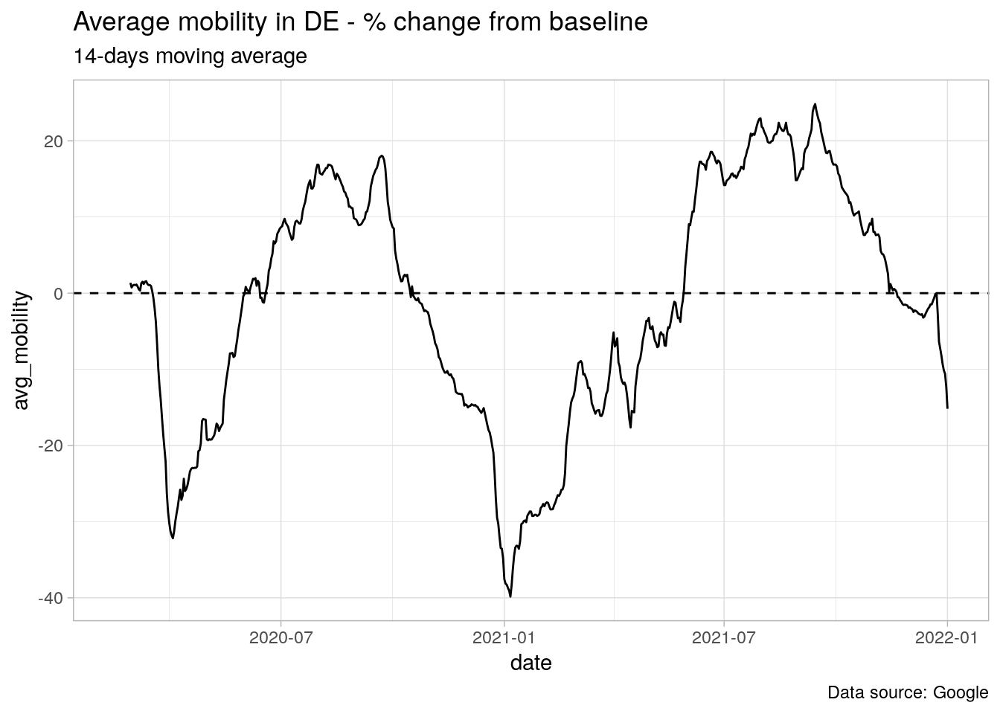

Chapter 3 Google Mobility
For this exercise, we will use the Google Mobility data. Google started releasing this data on a daily basis right after the COVID outbreak spread across the world by mid-February 2020. Since then this data has been widely used for different purposes: from assessing/measuring economic activity to designing public policies. In spite of being a well-organized dataset, it does offer the opportunity to do real-life data wrangling and to explore good practices from importing through visualizing.
3.1 Importing data
Google offers two ways of downloading its mobility data: you can either get a unique .csv file with all the available countries or you can get a .zip file with a separate .csv file for each country. We will stick with the latter for two simple reasons. First, it is much more challenging to import many files at once and bind them together. Second, this kind of work comes up very often in everyday work.
We begin by downloading the .zip file to the data folder.
download.file(
url = 'https://www.gstatic.com/covid19/mobility/Region_Mobility_Report_CSVs.zip',
destfile = 'data/Region_Mobility_Report_CSVs.zip'
)Now suppose we want to analyze a small group of countries. In this case, a better approach is to only import the .csv corresponding to these countries and then bind them together. After a brief inspection of the .zip file, we can see a clear pattern in filenames: year_country-code_Region_Mobility_Report.csv. For example, the file containing data for Brazil in 2021 is: 2021_BR_Region_Mobility_Report.csv.
So, our first task is to produce a vector with the desired filenames. This vector will be used later to extract the corresponding .csv from the .zip file. If you have enough experience with data science you may have already figured out a solution. Before taking it forward, stop for a while and think: is it general enough? What if Google kept releasing this data for years in the future, would your solution still work?
In order to not get ourselves caught in this trap, we invoke Sys.Date() to recover the current year and use it as the end point of our sequence of years. Whether you are reading this book in 2022 or in 2030 and Google still releases mobility data with filenames following the same pattern, then you can safely use the solution below.
library(lubridate)
library(tidyverse)
countries_codes <- c('BR', 'US', 'DE', 'ZA', 'SG', 'AU')
years <- seq(from = 2020,
to = lubridate::year(Sys.Date()),
by = 1)
google_filenames <-
purrr::cross2(years, countries_codes) %>%
purrr::map_chr(.f = function(x){
x %>%
glue::glue_collapse(sep = '_') %>%
glue::glue('_Region_Mobility_Report.csv')
})The purrr::cross2 function creates all the combinations between codes and years we need to replicate the first part of the filenames. The final part is static, so it’s just a matter of pasting this piece into each element of the vector. We can check the result below:
## [1] "2020_BR_Region_Mobility_Report.csv" "2021_BR_Region_Mobility_Report.csv"
## [3] "2022_BR_Region_Mobility_Report.csv" "2020_US_Region_Mobility_Report.csv"
## [5] "2021_US_Region_Mobility_Report.csv" "2022_US_Region_Mobility_Report.csv"
## [7] "2020_DE_Region_Mobility_Report.csv" "2021_DE_Region_Mobility_Report.csv"
## [9] "2022_DE_Region_Mobility_Report.csv" "2020_ZA_Region_Mobility_Report.csv"
## [11] "2021_ZA_Region_Mobility_Report.csv" "2022_ZA_Region_Mobility_Report.csv"
## [13] "2020_SG_Region_Mobility_Report.csv" "2021_SG_Region_Mobility_Report.csv"
## [15] "2022_SG_Region_Mobility_Report.csv" "2020_AU_Region_Mobility_Report.csv"
## [17] "2021_AU_Region_Mobility_Report.csv" "2022_AU_Region_Mobility_Report.csv"To finish up, we now resort to the purrr::map function to extract each filename from the .zip file. At this stage, I would like to draw your attention for something very important. Remember that we are ultimately interested in binding together the twelve .csv files in google_filenames. Since Google’s files contain columns for both country and date, we could safely use purrr::map_dfr to automatically stack the data – it would save us a few lines of code.
However, it could well be that these files do not contain identifying columns – this information being only in the filename. It happens more often than not in real-life applications. So, if we naively stacked these files we would never be able to distinguish which country or date period each piece of the resulting data frame refers to. Therefore, a better strategy in this case is:
- Using the
purrr::mapfunction to import each file as an element in a list. - Assigning meaningful names for each element of that list with
magrittr::set_names. - Invoking the
plyr::ldplyfunction to stack them.
The plyr::ldply function is very convenient here because it carries the names of the elements in the list into the resulting data frame as a new column. In addition, it also has several other useful features such as applying a generic function to each element of the list before stacking it and parallel processing.
In this example, the filenames contain both the country code and year for each dataset. Thankfully, we have a very simple pattern and we can extract the relevant information from the first seven characters of each element in our vector google_filenames. More complicated patterns would require the use of regular expressions (regex). We are now ready to perform our stacking safely.
mobility_data <-
purrr::map(
.x = google_filenames,
.f = function(x){
readr::read_csv(unz('data/Region_Mobility_Report_CSVs.zip', x))
}) %>%
magrittr::set_names(stringr::str_sub(google_filenames, start = 1, end = 7)) %>%
plyr::ldply(.id = 'year_country')Below the first four columns and five rows of the resulting data frame. We could make things as neat as possible by using the purrr::separate function to separate the year_country column into two columns: year and country. But since it is not a necessary step here (we already have these information from other columns), we will leave it as an exercise.
## year_country country_region_code country_region sub_region_1
## 1 2020_BR BR Brazil <NA>
## 2 2020_BR BR Brazil <NA>
## 3 2020_BR BR Brazil <NA>
## 4 2020_BR BR Brazil <NA>
## 5 2020_BR BR Brazil <NA>3.2 Preparing the data
Now the we have successfully imported the data for the selected countries, it is time to produce useful content. Let’s begin with a closer look on the structure of the dataset. I removed the year_country column since it was only for pedagogical purposes and we won’t need it.
mobility_data %>%
dplyr::glimpse()## Rows: 3,356,027
## Columns: 15
## $ country_region_code <chr> "BR", "BR", "BR", "…
## $ country_region <chr> "Brazil", "Brazil",…
## $ sub_region_1 <chr> NA, NA, NA, NA, NA,…
## $ sub_region_2 <chr> NA, NA, NA, NA, NA,…
## $ metro_area <lgl> NA, NA, NA, NA, NA,…
## $ iso_3166_2_code <chr> NA, NA, NA, NA, NA,…
## $ census_fips_code <chr> NA, NA, NA, NA, NA,…
## $ place_id <chr> "ChIJzyjM68dZnAARYz…
## $ date <date> 2020-02-15, 2020-0…
## $ retail_and_recreation_percent_change_from_baseline <dbl> 5, 2, -2, -3, -1, 1…
## $ grocery_and_pharmacy_percent_change_from_baseline <dbl> 4, 3, 0, -1, -2, 7,…
## $ parks_percent_change_from_baseline <dbl> -5, -13, -12, -11, …
## $ transit_stations_percent_change_from_baseline <dbl> 8, 3, 9, 9, 8, 11, …
## $ workplaces_percent_change_from_baseline <dbl> 6, 0, 19, 15, 14, 1…
## $ residential_percent_change_from_baseline <dbl> 0, 1, -1, -1, -1, -…We can see our dataset has about 3.19 million rows and 15 columns. The most relevant information are stored in the columns ending with percent_change_from_baseline. These are precisely the measures of mobility for categorized places. The other columns of interest are those containing region and, of course, the column date. I recommend you to set some time aside to explore the dataset. You will notice that the sub_region_* columns refer to sub-national breakdowns such as states and municipalities. They are both NA for the national level.
Suppose our ultimate goal is to have a plot with the average mobility of the categories for each country in the national-level. We know in advance that it’s very likely that a strong seasonal pattern is present. For example, mobility in workplaces should be higher during weekdays and lower on weekends. The opposite should be true for parks. We will address the issue of seasonality later in Chapter #. For now, it’s enough to know that creating a 7-days rolling mean of the original time series does the trick.
Finally, we need to invert the residential mobility since a higher (lower) residential mobility means a lower (higher) mobility elsewhere. So, if we are to aggregate all the mobility categories into one single measure (the average) they must point to the same direction.
Hence, our task is to produce a data frame with only the relevant variables. This involves, for each country, the following sequence of actions:
- Filter the national data.
- Invert the direction of the residential mobility (change the sign).
- Transform each mobility category column into a 7-days moving average.
- Create a column with the average mobility of categories.
- Remove the irrelevant variables.
This should not be quite a challenge and we can accomplish it with a few lines of code using the right features from dplyr (1.0.0 or higher) package. I consider Items 3 and 4 the most important because we are tempted to offer a cumbersome solution that can be easily avoided with the proper tools. But before jumping to the best approach. let’s figure out how an old-fashioned approach might look like for Item 3. Using the RcppRoll::roll_meanr to compute 7-days rolling means, our first solution could be something like this:
mutate_try1 <- mobility_data %>%
dplyr::group_by(country_region) %>%
dplyr::arrange(date) %>%
dplyr::mutate(
retail_and_recreation_percent_change_from_baseline = RcppRoll::roll_meanr(retail_and_recreation_percent_change_from_baseline, 7),
grocery_and_pharmacy_percent_change_from_baseline = RcppRoll::roll_meanr(grocery_and_pharmacy_percent_change_from_baseline, 7),
parks_percent_change_from_baseline = RcppRoll::roll_meanr(parks_percent_change_from_baseline, 7),
transit_stations_percent_change_from_baseline = RcppRoll::roll_meanr(transit_stations_percent_change_from_baseline, 7),
workplaces_percent_change_from_baseline = RcppRoll::roll_meanr(workplaces_percent_change_from_baseline, 7),
residential_percent_change_from_baseline = RcppRoll::roll_meanr(residential_percent_change_from_baseline, 7)
)This solution is terrible, nevertheless I come across it very often. Fortunately, we already have a way to avoid it. The first step towards a better solution would be to use dplyr::across to replace the variable name in the right-hand side by .x. This will eliminate part of the redundancies.
mutate_try2 <- mobility_data %>%
dplyr::group_by(country_region) %>%
dplyr::arrange(date) %>%
dplyr::mutate(
across(retail_and_recreation_percent_change_from_baseline, ~RcppRoll::roll_meanr(.x, 7)),
across(grocery_and_pharmacy_percent_change_from_baseline, ~RcppRoll::roll_meanr(.x, 7)),
across(parks_percent_change_from_baseline, ~RcppRoll::roll_meanr(.x, 7)),
across(transit_stations_percent_change_from_baseline, ~RcppRoll::roll_meanr(.x, 7)),
across(workplaces_percent_change_from_baseline, ~RcppRoll::roll_meanr(.x, 7)),
across(residential_percent_change_from_baseline, ~RcppRoll::roll_meanr(.x, 7))
)Ok, we’ve made some progress in cutting part of the repetitions but we can certainly do better. Note that in this case the variables we are interested in show a clear pattern: they all end with percent_change_from_baseline or simply baseline. We can take advantage of this to further improve our solution using select helpers.
These are expressions that can be used to refer to specific patterns or make generalizations. For instance, here we could use the select helper ends_with to create the 7-days rolling mean for all the variables ending with baseline.
In addition, we can also use the argument .names to assign a glue-style name to the new variables: {.col} gets the column name and {.fun} gets the name of the function. This is great to identify which function we applied to each variable. Here, we can use a ma7d suffix which stands for moving-average 7-days.
mutate_topsolution <- mobility_data %>%
dplyr::group_by(country_region) %>%
dplyr::arrange(date) %>%
dplyr::mutate(
across(ends_with('baseline'), ~RcppRoll::roll_meanr(.x, 7), .names = '{.col}_ma7d')
)The main lesson here is to avoid using variables names to compute the operations. Instead, whenever possible we must rely on the combination of across and select helpers. This avoids unnecessarily writing variables names so many times and therefore allows us to scale up the work.
The same reasoning applies to Item 4. Can you see how? Remember that Item 4 asks us to create a column with the average mobility of categories. Well, all these columns we need to average end with baseline. So we don’t need to rewrite all the variables names to get a new column with the mean – we can resort to select helpers. The only difference is that now we need an operation over the rows rather than over the columns – we are averaging the values over the rows.
We can accomplish it by using dplyr::rowwise. Roughly speaking, this function turns every row of the data frame into a single group. Then you can perform your calculation on that group (the row). In addition, we have to replace the across function by the c_across function. The c_across is simply the equivalent of across when we’re using rowwise mode. Remember to use dplyr::ungroup to turn row-wise off and get back to the default column-wise mode when you don’t need operations over rows anymore.
Below the full solution for Items 1 to 5.
mobility_prep <- mobility_data %>%
dplyr::filter(is.na(sub_region_1)) %>%
dplyr::mutate(across(starts_with('residential'), ~ -1*.x)) %>%
dplyr::group_by(country_region) %>%
dplyr::arrange(date) %>%
dplyr::mutate(across(ends_with('baseline'), ~ RcppRoll::roll_meanr(.x, 7, na.rm = TRUE), .names = '{.col}_ma7d')) %>%
dplyr::ungroup() %>%
dplyr::rowwise() %>%
dplyr::mutate(avg_mobility = mean(c_across(ends_with('ma7d')), na.rm = TRUE)) %>%
dplyr::ungroup() %>%
dplyr::select(date, country_region, ends_with('baseline'), avg_mobility) 3.3 Plot information
We have mobility data for six countries and we should now decide how to plot them. Time series are usually better presented as lines, but there are some choices to be made. The most important one is whether we should display all the countries on a single or separate graph. It depends on the purpose of the plot. If we are interested in observing the differences among countries in the same time period, then a single graph is a natural choice. On the other hand, if our goal is to observe in more detail the evolution in each country, then a separate plot is more convenient.
Let’s stick with the latter in this example. We can easily do this using facet_wrap which is a very cool feature from ggplot. In this case we’re segmenting our plot by country, but we’re not constrained to segment it by only one variable. Besides, we can use the argument scales = 'free_y' to make the scales of each graph more adjusted to the limits of the data. It’s not desirable here as we want to make visual comparisons between countries straightforward.
mobility_prep %>%
ggplot(aes(x = date, y = avg_mobility)) +
geom_line() +
facet_wrap(~ country_region) +
labs(title = 'Average mobility in selected countries - % change from baseline',
subtitle = '7-days moving average',
caption = 'Data source: Google') +
geom_hline(yintercept = 0, linetype = 2) +
theme_light()
3.4 From code to function
We have the complete code to import, prepare and visualize the data. Perhaps this analysis will become part of our routine or that of a stakeholder. And if that happens, it’s very likely that we’ll need to look at other countries. So a good practice in this case is to convert our code into a function.
Creating a function is highly recommended whenever we have a repeated action on a different set of arguments. Here, we can think of two arguments that we would like to change eventually: country and the window size of the rolling mean. Therefore our task is to gather all the code we have produced so far and to transform these two inputs into arguments of the function.
Note, however, that converting code into a function raises some issues. For example, when writing the code we used a vector to import data for the selected countries. It’s not the most efficient approach, because each file has a significant size and thus the execution may be very slow. This is a truly concern when we’re writing a function, because functions are most of the time used to loop over a large set of arguments – many countries, for example. Hence, we would like to process this task in parallel rather than serially.
Surely we can perform this parallel processing inside the function, but I always prefer to keep things simpler and more transparent. This means to write a function to plot only a single country and, if necessary, we can use purrr::map to get as many countries as we want – and (explicitly) in parallel.
Other minor yet important issue is that in a function we have to use the arguments as inputs everywhere, not only in obvious places. For example, when preparing the data we included a ma7d to the column names to indicate they were transformed into 7-days rolling mean. This label was also used in many actions later – when computing the average mobility, in the plot subtitle, etc. Therefore, we need to ensure that this argument will be considered in those actions as well. To achieve this, we’ll use glue::glue() function to create custom labels.
plot_mobility <- function(country_code, ma_window){
library(lubridate)
library(tidyverse)
library(glue)
# Import data
countries_codes <- country_code
years <- seq(from = 2020,
to = lubridate::year(Sys.Date()),
by = 1)
google_filenames <-
purrr::cross2(years, countries_codes) %>%
purrr::map_chr(.f = function(x){
x %>%
glue::glue_collapse(sep = '_') %>%
glue::glue('_Region_Mobility_Report.csv')
})
mobility_data <-
purrr::map_dfr(
.x = google_filenames,
.f = function(x){
readr::read_csv(unz('data/Region_Mobility_Report_CSVs.zip', x))
})
# Prepare data
mobility_prep <- mobility_data %>%
dplyr::filter(is.na(sub_region_1)) %>%
dplyr::mutate(across(starts_with('residential'), ~ -1*.x)) %>%
dplyr::group_by(country_region) %>%
dplyr::arrange(date) %>%
dplyr::mutate(across(ends_with('baseline'), ~ RcppRoll::roll_meanr(.x, ma_window, na.rm = TRUE), .names = '{.col}_ma{ma_window}d')) %>%
dplyr::ungroup() %>%
dplyr::rowwise() %>%
dplyr::mutate(avg_mobility = mean(c_across(ends_with(glue('ma{ma_window}d'))), na.rm = TRUE)) %>%
dplyr::ungroup() %>%
dplyr::select(date, country_region, ends_with('baseline'), avg_mobility)
# Output: plot
mobility_prep %>%
ggplot(aes(x = date, y = avg_mobility)) +
geom_line() +
labs(title = glue('Average mobility in {country_code} - % change from baseline'),
subtitle = glue('{ma_window}-days moving average'),
caption = 'Data source: Google') +
geom_hline(yintercept = 0, linetype = 2) +
theme_light()
}We can now use the function plot_mobility to plot any country we want and with the desired window for the rolling mean.
plot_mobility('BR', 14)
Or we can use purrr::map and gridExtra to plot several countries.
countries <- c('BR', 'US', 'FR', 'DE')
mobility_countries <- purrr::map(.x = countries, .f = plot_mobility, 14) %>%
magrittr::set_names(countries)
mobility_countries[['DE']]
To finish up, we must keep in mind that a function that return a plot is not very flexible and maybe we should consider the output to be the processed data instead of the plot. This would enable us to customize the plot and to perform other analysis as well.